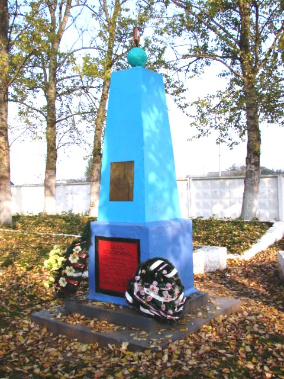
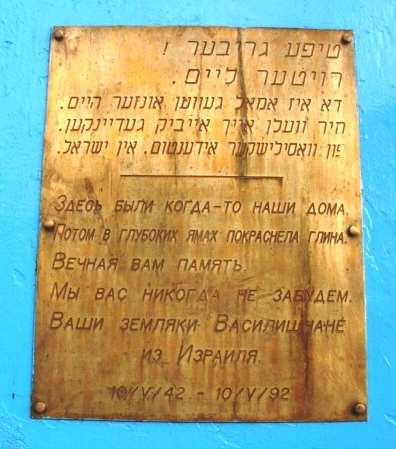
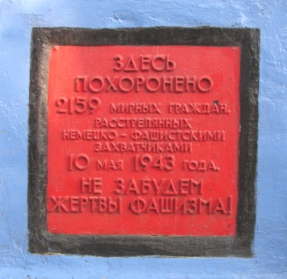

В центре Василишек находится братская могила узников гетто, расстрелянных 10 мая 1943 года. Обелиск установлен в 1967 году.
Василишки — агрогородок в Щучинском районе Гродненской области. До войны здесь жила большая еврейская община, а само местечко было районным центром.
После оккупации в 1941 году нацисты создали гетто. Узников держали в тесноте, ежедневно выгоняли на принудительные работы, им запрещалось покидать гетто под угрозой расстрела.
10 мая 1943 года гетто ликвидировали. Людей выгоняли из домов, избивали и гнали к кладбищу, где расстреливали. В этот день погибли родные одного из немногих выживших, Самуила Полячека.
В 1967 году на месте расстрела установили обелиск. Сегодня это место памяти о еврейской общине Василишек и жертвах Холокоста.


